I enjoy working with doctoral students, both at Indiana University and elsewhere, toward a shared goal: developing rigorous and impactful research with the potential to publish in the leading journals in Operations Management and Operations Research.
I am always interested in connecting with self-motivated and diligent doctoral students—current and prospective—who are curious about the platform economy, online marketplaces, artificial intelligence, and emerging digital technologies.
Published/Accepted
Restaurant Density and Delivery Speed in Food Delivery Platforms, with Zhanzhi Zheng and Ruomeng Cui. [SSRN]
Forthcoming, Operations Research.
- Student coauthor: Zhanzhi Zheng, University of North Carolina at Chapel Hill
- food delivery platforms · restaurant density · delivery speed · market thickness
- queueing theory · panel econometrics · platform transaction data
Omnichannel Operations in On-Demand Delivery Platform with Buy-Online-and-Pick-up-in-Store, with Yu Guo, Fei Gao, and Liu Ming. [SSRN]
Forthcoming, Manufacturing & Service Operations Management.
- Student coauthor: Yu Guo, University of Science and Technology of China
- on-demand delivery · buy-online-pick-up-in-store · channel design · courier labor
- game-theoretic modeling · equilibrium analysis · welfare analysis
Under review
Learning by Doing in SME Manufacturing, with Mengfei Li, Yue Cheng, Liu Ming, and Xiaole Wu. [SSRN]
Reject & Resubmit invited, Management Science.
- Student coauthor: Mengfei Li, Fudan University
- small and medium manufacturers · learning by doing · production lead times · digitalization
- duration models · panel econometrics · order-level ERP data
When Workloads Are Emotional Labor: An Empirical Study of Livestreaming Productivity, with Feifei Song, Shenyang Jiang, and Ken Moon. [SSRN]
- Student coauthor: Feifei Song, The Hong Kong Polytechnic University
- livestreaming commerce · gig work · emotional labor · worker productivity
- natural experiment · causal inference · stream-level panel data
What we work on
Three directions, all concerned with how the design of a platform changes the behavior of the people on it — and who gains and loses as a result.
Platform design levers. A marketplace chooses what information to reveal, how to match the two sides, and how to grow. Each choice works only indirectly, through the strategic responses of participants, and the net effect is rarely obvious in advance. See information provision in two-sided platforms, market thickness, and marquee seller adoption.
AI in marketplace decisions. Platforms increasingly hand operational judgment to algorithms. When that improves outcomes, when it does not, and what is lost in the substitution are open empirical questions. See keyword auction campaigns.
Work and welfare on platforms. The people who deliver the orders, run the livestreams, and staff the factories bear consequences that platform metrics do not capture — safety, effort, emotional labor, learning. See traffic incidents in meal delivery and livestreaming productivity.
These are where my current work sits, not a fence around it. Questions about emerging digital technologies in marketplace settings are worth raising even when they do not fit neatly into one of the three.
Methodologically I work with structural estimation, causal inference, causal machine learning, game theory, and applied queueing theory. I do not expect a student to arrive knowing all of these. I do expect genuine curiosity about which one a question actually calls for.
Ways to work with me
If you are applying to doctoral programs
Indiana University’s Kelley School of Business admits students through the Operations & Decision Technologies doctoral program, where I sit in Operations Management. The department decides admissions, not individual faculty, so start with the application rather than my inbox. Recent placements show where graduates go.
Writing to me first is welcome but carries no weight in admissions. It is useful for working out whether our interests overlap.
If you are already enrolled elsewhere
Several of the papers above began this way: your own advisor supervises your dissertation, and I join one project as a coauthor. We meet regularly by video and work in shared drafts. Being at different universities has never limited what a project could reach.
What it asks of you is that you own the project. I will argue with your framing, push on identification, and read drafts closely — but the momentum has to be yours.
Getting in touch
Email me at wenczhan@iu.edu. A note with these three things will get a faster and more useful reply than a general expression of interest:
- what you are working on now, in a paragraph
- one question you would like to be able to answer, and why it is hard
- your CV
Where my students are

Nine current and former doctoral collaborators, at institutions in seven cities across two continents.